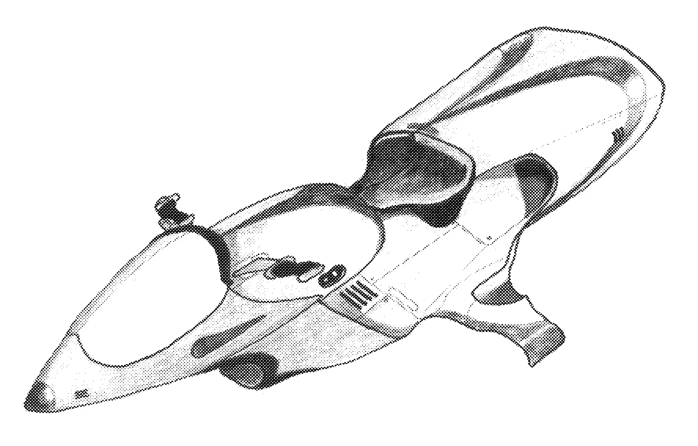
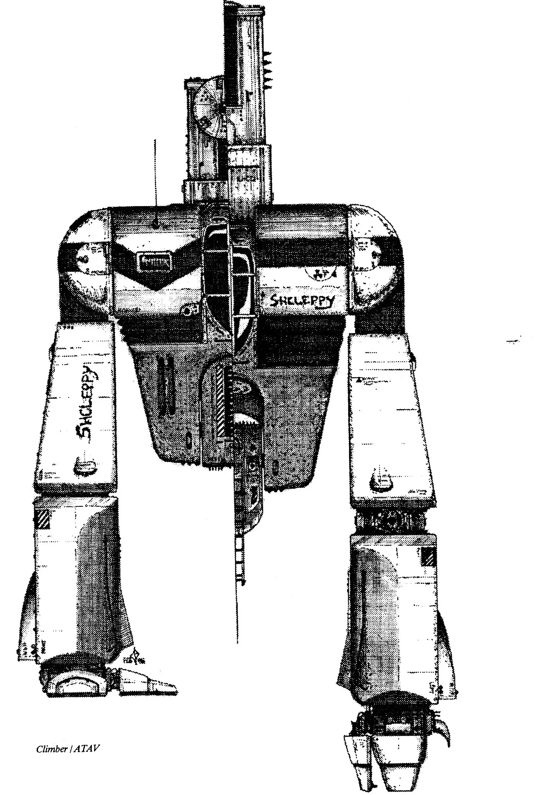
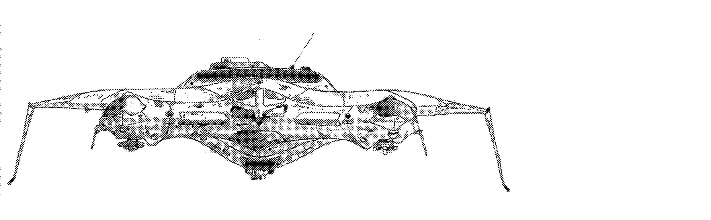
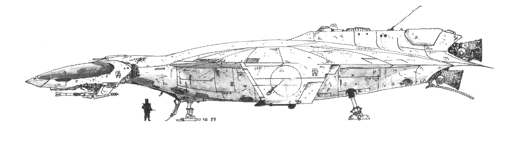
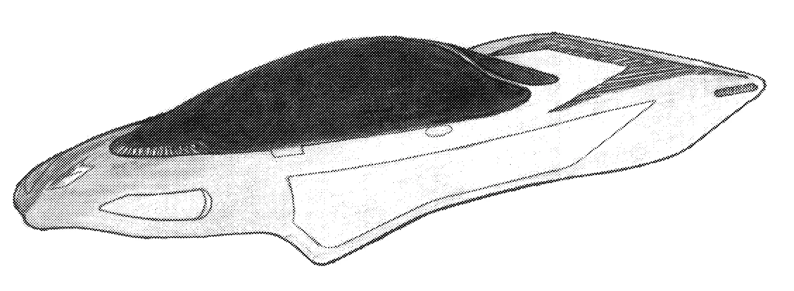

Organic
Dowser
Light bipedal creatures a dowser stands 2.5 meters tall and the saddle is 1.5 m off the ground. They have hair, essentially wool, and they are usually shaved. Their wool coat can protect them in cool environments but they prefer the desert.
Nuage
A large horse-like beast of burden standing 2 meters tall at the shoulders that walks on four legs. A nauge is covered in long shaggy hair, making it excellent for cool and cold environments. Capable of carrying up to 1 tonne for 4 hours at a stretch they are the best of all pack animals for endurance and strength.
Inorganic
For those vehicles obtaining substantial velocities scanners and radar are standard equipment, all other vehicles can be fitted with scanners, radar, computers and weapons if they are bought for the vehicle. All forms of transportation use a standard "batt" as their power source (which are functionally all the same, but differ in size). EVERY vehicle comes equipped with five FLARES and a SMALL REPAIR KIT all others systems are optional and must be bought by the vehicle's purchaser along with the vehicle.
Wheel
The Name WHEEL is already in its plural form so when saying that you had seen more than one wheel you would say "I saw ten WHEEL". The WHEEL is basically a center cockpit with a thick, wide tire running completely around its circumference. The tire is about ten cm. thick all around except on the tread when it thickens to twenty cm. The cockpit remains upright regardless of the speed of the tire. The driving force of the WHEEL is a large motor underneath the cockpit that spins the WHEEL by means of gear teeth surrounding the inside diameter of the tire. The motor then applies a cog to these teeth and, by means of a transmission and a differential, the WHEEL is moved along at its TOP SPEED (see below). The hemispherical "hub caps" on each side of the tires are to allow more room for the occupant to sit and to operate the vehicle and more room for the one passenger. Breaking is accomplished by removing the driving force from gear teeth and a flywheel, spinning in the opposite direction of the wheel, counteracts the motion of the tire and the vehicle slows down. The seats are thickly padded as a standard feature because of the extreme speeds. To turn, the WHEEL tilts into the turn a varying degree depending on the speed at which the turn is being attempted. By tilting, the WHEEL can turn very sharp corners and still be able to sustain the same speed. The maximum speed that the WHEEL can travel in its tightest turning circle is 200 Km/h. All other turns are classified a shallow, sharp or very sharp the maximum speed that is possible in each is 360, 300 or 220 Km/h respectively.
TOP SPEED: 410 Km/h
CRUISING SPEED: 380 Km/h
DIMENSIONS (Dia.*W): 5 * 3m
BASE PRICE: 6700 Dits
LENGTH OF USE / BATT: 24 hours
Wheels
This is a central cockpit suspended between two separate wheels. The central cockpit stays upright regardless of speed due to a large gyroscope that stabilizes it. The hemispherical hub caps on the sides of each wheel are to prevent the WHEELS from coming to rest on an end if it were to flip. The central cockpit can accommodate four persons, one of which is the driver, the rest can operate any weapons or subsidiary systems. The WHEELS, like the WHEEL, comes equipped with thickly padded seats, and because of the large differences in velocity, and due to the specialized way in which persons on the outside of the vehicle can be removed a five point harnesses is included. The cockpit can be locked to spin at the same rate as the tires. Then the centrifugal force exerted on the enemy would be so great that it would be impossible to remain attached to exterior of the cockpit.
The braking system is different to the WHEEL, in that
breaking weights, inside the wheel, are used. Normally
the weights are kept near the center of the axle, when
breaking is desired the weights are released on cables
and they slow down the vehicle. Reverse direction can be
applied to the tires to stop in a shorter distance but
usually the large weights are sufficient to slow the
WHEELS down. The horizontal support is shaped like an
inverted wing so that at high speeds the vehicle will
maintain traction.
TOP SPEED: 380 Km/h
CRUISING SPEED: 260 Km/h
DIMENSIONS (Dia.*W): 5 * 8
BASE PRICE: 12 900 Dits
LENGTH OF USE / BATT: 18 hours
Hover Bike
The HOVERBIKE is the fastest form of conventional
transportation second only to a "DELTA-WARP"
unit. The HOVER BIKE was designed to carry one person,
the operator of the vehicle. This person steers by a
straight forward and backward motion of the steering
arms. A special PAD suit, with a metal plate in the
chest region, must be worn while operating the BIKE. The
HOVER BIKE has a scoop on its underside where air
pressure drives a turbine and powers an electromagnet.
The electromagnet "holds" the driver in place
when the vehicle is travelling at great speeds. The
faster the bike travels, the greater force holding him
against the BIKE, so the driver can't blow off.
Other safety features have been built into the HOVER
BIKE such as a contour seat that is comprised of 10 cm.
of high density foam. The driver also wears a special
helmet that is shaped to be as aerodynamic. The HOVER
BIKE hover height can be adjusted from a max. of 5m down
to .2m min. The drivers feet are placed on the 2 foot
rests at either side of the BIKE, legs bent forward at
the hip and back at the knees. Finally the driver leans
totally forward and places his chest against the fuel
tank. In this position the driver is safe form the
blasting wind which could rip him off the seat. The rear
burner supplies additional thrust when the user requires
it but only when the vehicle is travelling over 500
Km/h.
TOP SPEED: 700 Km/h
CRUISING SPEED: 660 Km/h
DIMENSIONS (LHW): 1.5.7.5 m
BASE PRICE: 5 700 Dits
LENGTH OF USE / BATT: 48 hours

Climber
The CLIMBER or TWO-LEGGED MURPHY, as it is sometimes
known to the older Prospectors, is a slow, bulky vehicle
built for moving over rugged terrain. It was designed by
Humans in the 60's and is made for Humans so only
closely conforming humanoid races may pilot a CLIMBER.
While modifications can be made to a degree, over 90% of
the CLIMBERS encountered are Human fitted. The CLIMBER
is essentially a high-powered exoskeleton which upgrades
the users Physical Strength by 110 points while
similarly decreasing his Agility by 25 points, so as to
gain stability on the rugged ground it encounters. When
moving across flat land or walking, the CLIMBER plods
forward on it's two large legs, and is able to
conform or step around most small obstacles. The climber
can traverse grades of up to 40 percent safely on foot,
and, by applying it's 'third arm' to the
task it may climb up and down sheer rock faces and even
under rock overhangs. Inside, the one humanoid occupant
is situated in a cushioned harness which protects him
from damage should the climber fall over and also to
allow ease of operation. The climber is heat resistant
to about 500 degrees Celsius and pressure and liquid
resistant to 500 Kpa or five atmospheres. The vessel is
self contained and contains a 30 hour air ( any vital-
gases ) supply, a day of provisions, a waste disposal
unit, a first-aid, and a tool kit. Cargo is stowed above
the pilot's head.
TOP SPEED: walking 15 km/hr climbing 2 m/sec
DIMENSIONS: 6m high by 5m wide by 3m thick
OPERATIONAL PERIOD PER BATT: 35 hrs
PASSENGERS: 1
CARGO LIMIT: 2 cubic meters, 150 kg
COST: 4700 DITs (2 DITs/hr to rent)
TECHCODE: 3

Dolphin
The DOLPHIN is basically a small 8 person submersible
that can dive to a depth of 2 kilometers under water or
any liquid of similar density . Two persons are required
to pilot the DOLPHIN and the other six are passengers.
It is equipped with two triple jointed manipulator arms
and eight pressurized cameras to track their movement.
The DOLPHIN also comes equipped with four hard shell
diving suits which are able to stand the pressures of
diving at 2 kilometers . The fins at the back of the sub
offer a great amount of maneuverability, the wings along
the sides also lend more stability to the craft. The
openings in the front of the wings are to allow water to
be pulled into the DOLPHIN's turbines. The water is
then forced trough jets in the rear of the ship. Thus
moving the DOLPHIN at great speeds. The speeds listed
below are listed for SURface and SUBmerged
respectively.
TOP SPEED:(Sur, Sub) 90, 35 Knots
CRUISING SPEED:(Sur, Sub) 70, 15 knots
DMENSIONS (LHW): 20 * 3 * 5m
BASE PRICE: 9 000 Dits
LENGTH OF USE / BATT:(Sur, Sub) 18, 8 hours
Snow Terrain Sled (S.T.S.)
This vehicle can seat up to six people one for operator
and five passengers. The S.T.S. was constructed for the
harsh environment of the arctic on Earth, but can be
used on even more severe and frozen wastelands. The
SLED's highly toothed tracks and scooped treds make
it possible for the S.T.S. to travel over solid ice and
still keep moving. The S.T.S. can be used in other
environments other than arctic, excluding tropical
without installing optional air conditioning. The
vehicle has a cargo space, that can be heated if desired
in the rear of the vehicle. The vehicle has an optimal
density scanner, able to sense varying thicknesses of
ice. The minimum thickness of ice that this vehicle can
travel on is 30 cm.
TOP SPEED: 80 Km/h
CRUISING SPEED: 65 Km/h
DIMENSIONS (LHW): 5 * 2.5 * 2 m
BASE PRICE: 6 500 Dits
LENGTH OF USE / BATT: 36 hours
Mahendoshi Lander
This is a small extremely light and maneuverable vehicle
used in the mines on the planet of MARK ASHURA for
excavation of tunnels and hauling ore . Obviously this
vehicle is constructed for the MEHENDOSHI and is
consequently very small. Therefore the MAHENDOSHI LANDER
is not for use by races other than the MAHENDOSHI. TOP
SPEED: 300 Km/h
CRUISING SPEED: 200 Km/h
DMENSIONS (LHW): 1 * 0.6 * 0.3m
BASE PRICE: 2 000 Dits
LENGTH OF USE / BATT: 36 hours
High Gravity Skiff
This vehicle is primarily made for medium to high
gravity planets. This vehicle seats four ( one operator
and three passengers ). This vehicle's large high
power hydrogen powered engines provide the extreme
amount of thrust required to move on a high gravity
planet. The windows can be darkened to provide
protection from the sun. This vehicle is only capable of
'flight' under an atmosphere. This vehicle is
capable of processing hydrogen from raw atmosphere (
provided that the atmosphere is hydrogen rich. ie11 % or
more. TOP SPEED: 130 Km/h
CRUISING SPEED: 90 Km/h
DMENSIONS (LHW): 422 m
BASE PRICE: 5 500 Dits
LENGTH OF USE / BATT: 36 hours
Computer Controlled Vehicle (C.C.V.)
This is the basic family / civilian / law enforcement
ground car. The car can seat four comfortably and has an
area that can hold 1 cubic meter of cargo. The
windshield and the windows can be darkened to stop the
sun from blinding the driver. Most of these vehicles are
equipped with a small key pad near the door handle and
when the right code is inputed the door opens and the
car begins to hover above the ground. If the load
increases in mass the car compensates for it. The hover
height is 10 cm. The driver can select between automatic
or manual mode. In automatic mode the driver simply
types in the location and its corresponding code number
and the car will drive at a safe speed to the location.
In the manual mode of operation the driver has complete
control over the vehicle. TOP SPEED: 300 Km/h
CRUISING SPEED: 260 Km/h
DMENSIONS (LHW):31.52 m
BASE PRICE: 3 200 Dits
LENGTH OF USE / BATT: 45 hours
Hover Truck
This is another form of the C.C.V. but this car has a
larger cargo area ( 2 cubic meters) and a standard
seating capacity of 2 or 3. This vehicle can be fitted
with a hard top and seats to increase the seating
capacity to 10 eliminating cargo area. This
vehicle's windows can be darkened. This vehicle
also has an automatic and manual mode ( see C.V.V. for
description ). TOP SPEED: 250 Km/h
CRUISING SPEED: 200 Km/h
DMENSIONS (LHW):3*1.5.2 m
BASE PRICE:3 700 Dits
LENGTH OF USE / BATT: 45 hours
Excalibur & Osprey
A single pilot fighter craft that can reach three quarters the speed of light conventionally, with a range of 11 billion km per "BATT". Both vehicles have electromagnetic funnels to collect hydrogen from space. The hydrogen is tunneled in to a fusion reactor and the "BATT" provides the electricity, needed to produce the magnetic bottle, to contain the reaction. The plasma is then tunneled through the 'engine', located at the top of the ship, where it is concentrated and released to provide thrust. With an optional "DELTA WARP" unit the range and speed are unlimited. This craft is equipped with an escape pod with food, heat and atmosphere for a week. The escape pod can "DELTA WARP" to any place in the galaxy. The pod is equipped with a distress beacon that begins transmitting as soon as the 'WARP' is completed.
TOP SPEED: 225 000 Km/h
CRUISING SPEED: 200 000 Km/h
DMENSIONS (LHW):743 m
BASE PRICE: 120 000 Dits
LENGTH OF USE / BATT: 13.5 hours


Wind Current
This vehicle is extremely maneuverable and very fast.
The WIND CURRENT can travel for long periods of time
without interference from the driver. This car only
seats one ( two in an EXTREME emergencies ). The car can
be started and unlocked with codes entered on the keypad
on the door. The automatic altitude and course finder is
in side of this vehicle and thus eliminating the danger
of low altitude accidents. TOP SPEED: 550 Km/h
CRUISING SPEED: 500 Km/h
DIMENSIONS (LHW):2.51.31.5 m
BASE PRICE: 6 400 Dits
LENGTH OF USE / BATT: 36 hours
Skif Car
This car can seat 2 and has a hover height of a max. of
3 m to a min. of 4 cm. This vehicle has substantial
maneuverability. The instruments are displayed on the
wind screen or Heads Up Display ( HUD ). This vehicle
can seat 2 persons, side by side and has the ability to
travel on any planet up to a max of 3 G's. The car
uses hydrogen compressed from the atmosphere. This car
has one vulnerable point this is the small altitude
maintenance device at the bottom of the car. It will, if
in proper working order automatically right the vehicle
in the event the driver does not control the car. But if
it is removed, shot off or damaged in any way the car
will tumble uncontrollably until the car crashes.
TOP SPEED: 400 Km/h
CRUISING SPEED: 370 Km/h
DIMENSIONS (LHW):71.31.7 m
BASE PRICE: 7 500 Dits
LENGTH OF USE / BATT: 36 hours

Computer Skif
This car is computer controlled as the name suggests. It
seats 3 people, one in front and two in the back. It is
maneuverable and very fast. The C.S. car can function on
any planet with up to 3 G's max. The small wing
type protrusion on the bottom the vehicle automatically
rights the vehicle if the driver loses control. If this
wing is damaged, the car will go out of control and it
will tumble uncontrollably until the car crashes. TOP
SPEED: 380 Km/h
CRUISING SPEED: 340 Km/h
DIMENSIONS (LHW): 61.21.7m
BASE PRICE: 6 000 Dits
LENGTH OF USE / BATT: 24 hours
LARE
Designed originally as a all-terrain reconnaissance scout this bipedal walker has been adapted for many non-military functions. Appearing as a vehicle in many policies and security forces the LARE as it commonly known has been a great success for Acad Terra, their manufacturers. Carrying two men comfortably up to four can be held if the canopies are not closed. The bi-ped can be equipped with various weapons and sensors for scouting. Even the UEL has purchased several of these models for advance reconnoitres of planets. Stan Truck This is the major form of military ground transport. It is capable of transporting 30 people or large loads of 4 cargo (up to 48 cubic meters ) and three people. The STAN is equipped with balloon tires at the time of purchase but, several other types can be bought.
- Knobs - These have rubber protrusions to improve traction : 300 Dits per
- Scoops - These are shaped like a sea shell used in water or thick mud : 400 Dits per
- Balloon - These come with STAN, can be used for water or normal streets : 200 per
- Spikes - These are balloons with metal spikes embedded in them, used for ice and very smooth surfaces : 350 per
The STAN is equipped with a soft top for the rear compartment and a large spot light attached to the front of the STAN. This light is very powerful and can be used as a fog light. The STAN is capable of pulling a trailer.
TOP SPEED: 250 Km/h
CRUISING SPEED: 200 Km/h
DIMENSIONS (LHW):1042 m
BASE PRICE: 6 200 Dits
LENGTH OF USE / BATT: 24 hours

Moth
A descendent of the helicopter the moth is a 1 person craft that hovers using anti-gravity generators. Maneuverability is achieved by directed jets of air produced by the craft and exhausted through vents just below the cockpit. The large dome provides an all around view making a moth excellent for search and rescue operations, moving cargo containers, and all other tasks were precise positioning and a delicate touch is required. Stardrives